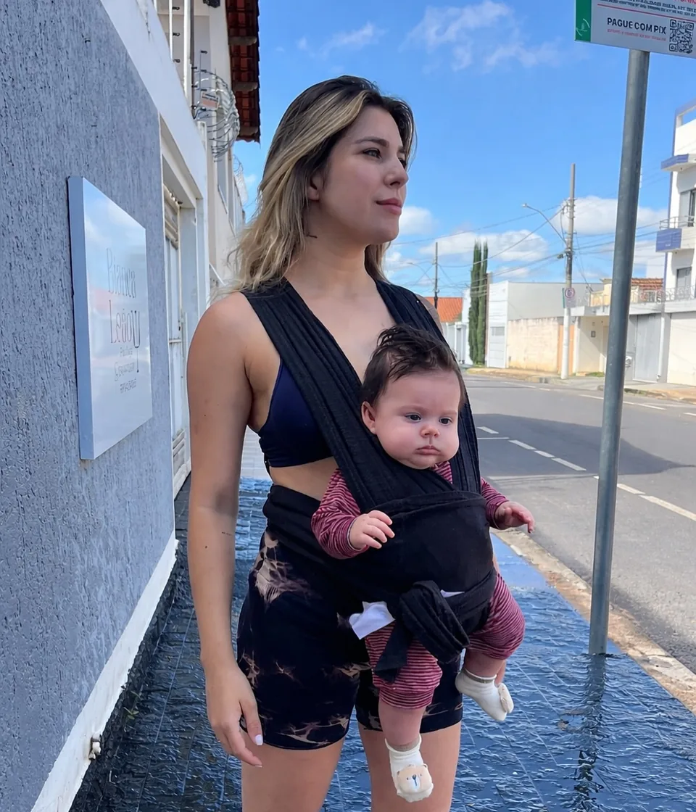

ESCUTAR
Compreender histórias, contextos e necessidades antes de propor caminhos.
De Patrocínio para Minas Gerais, uma trajetória marcada pela escuta, pela disciplina e pelo compromisso de estar perto.
Bianca Leão mora em Patrocínio, é mãe, psicóloga, karateca e voluntária. Sua história reúne diferentes formas de cuidado e uma convicção simples: política pública precisa enxergar pessoas de verdade.
A psicologia trouxe a escuta. A maternidade ampliou o olhar para as famílias e o futuro. O karatê reforçou disciplina e equilíbrio. O voluntariado aproximou Bianca de iniciativas que transformam comunidades todos os dias.
Essa combinação inspira uma candidatura federal conectada aos municípios mineiros, com atenção especial à saúde mental, ao diabetes, às mulheres, à infância, ao esporte e às organizações sociais.
Compreender histórias, contextos e necessidades antes de propor caminhos.
Olhar para famílias, oportunidades e para o futuro que começa na infância.
Levar disciplina, equilíbrio e coragem para os desafios públicos.
Estar junto de quem transforma presença em resultado para a comunidade.
A rotina de Bianca não separa a mãe da profissional. É no mesmo caminho, entre a casa e o consultório em Patrocínio, que nascem as pautas que ela leva para Minas.
CAMINHE COM BIANCA